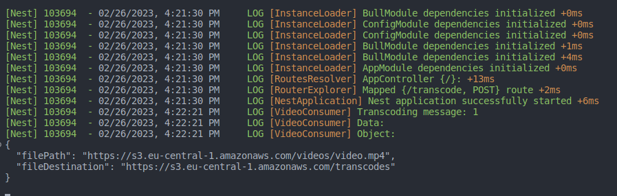
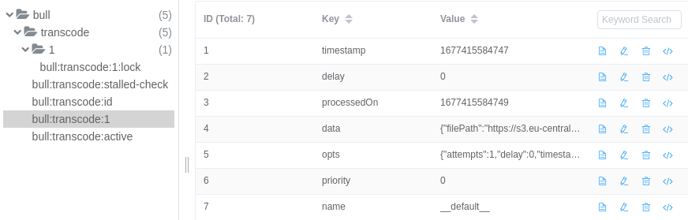
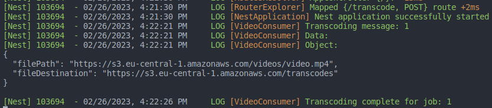
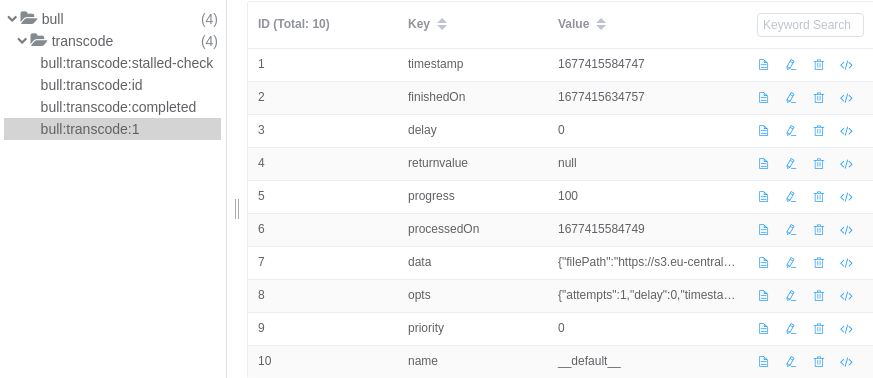

სტატიის წინაპირობაა nest -ის საფუძვლების ცოდნა.
Queue-ებს საკმაოდ დიდი როლი აქვთ აპლიკაციების დატვირვის დისტრიბუციულ განაწილებასა და პერფორმანსის ზრდაში. რადგან მათი გამოყენებით შეგვიძლია ასინქრონული ტასკების დისტრიბუციულად დამუშავება. მაგალითად შეგვიძლია Cpu ინტენსიური ტასკების გატანა ასინქრუნულად, დავამატოთ ისინი(Jobs) რიგის მსგავს მონაცემთა სტრუქტურაში, საიდანაც ერთი ან რამდენიმე worker პროცესები(Processes) გარკვეული თანმიმდევრობით ამოიღებენ და დაამუშავებენ მათ. მოცემული პატერნი საკმაოდ აქტუალურია node -ის სამყაროსთვის, რადგან ჯავასკრიპტის single-threaded ბუნების გამო resource-intensive ინსტრუქციების მთავარ სრედში დამუშავება იწვევს event-loop ის დაბლოკვას, ანუ აპლიკაციის პარალიზებას. წარმოვიდგინოთ მაგალითი ონლაინ კურსების აპლიკაცია, სადაც ადმინები ტვირთავენ ვიდეო მასალებს ყოველდღიურად და საჭიროა ამ ვიდეოების რამდენიმე გაფართოებაში ტრანსკოდირება, თამბნეილების გენერირება, ზომაში შემცირება ამ ყველაფრის მოგვარება მთავარი აპლიკაციის კოდში გამოიწვევს ფერფორმანსის სერიუზულ გაუარესებას, რადგან ვიდეო ენკოდინგი CPU ინტენსიური ტასკია. ამ პრობლემის ერთ-ერთი ყველაზე ელეგანტური გადაჭრა შეგვიძლია სწორედ Queue - ების გამოყენებით, ინტენსიური ტასკების გატანა მთავარი პროცესის გარეთ worker პროცესებში, სადაც გვაქვს პროდიუსერი(Produer- ამატებს ტასკს(Job) რიგში) და კონსიუმერი(Conumer- გარკვეული კონტროლირებადი გზით იღებს ამ ტასკებს(Jobs) და ამუშავებს).

განვიხილოთ მცირე მაგალითი nest -ის და bullMQ მოდულის გამოყენებით:
აუცილებელია ლოკალურად გვქონდეს nestjs/cli package:
npm i -g @nestjs/cli
შევქმნათ დემო პროექტი:
nest new media-encoder
შემდეგ დავაყენოთ nest/bull დინამირი მოდული
npm install --save @nestjs/bull bull
npm install --save-dev @types/bull
აპლიკაციის app მოდულში დავაიმპორტოთ ბულის მოდული, საჭიროა რედისი გვქონდეს ლოკალურად ან დოკერის კონტეინერში გაშვებული, რედისი საჭიროა რიგის მონაცემების, job -ების შესანახად, რადგან კონსიუმერი სწორედ მისგან იღებს ტასკებს.
შედეგ დავაინსტალიროთ ნესტის კონფიგურაციის მოდული env ფაილების წასაკითხად და შევქმნათ .env ფაილი სადაც რედისი ქრედენშელებს გავიტანთ.
npm i --save @nestjs/config
REDIS_HOST=localhost
REDIS_PORT=6379
import { BullModule } from "@nestjs/bull";
import { Module } from "@nestjs/common";
import { ConfigModule, ConfigService } from "@nestjs/config";
import { AppController } from "./app.controller";
import { AppService } from "./app.service";
import { TRANSCODE_QUEUE } from "./constants";
@Module({
imports: [
ConfigModule.forRoot(),
BullModule.forRootAsync({
imports: [ConfigModule],
useFactory: async (configService: ConfigService) => ({
redis: {
host: configService.get("REDIS_HOST"),
port: configService.get("REDIS_PORT"),
},
}),
inject: [ConfigService],
}),
BullModule.registerQueue({
name: TRANSCODE_QUEUE,
}),
],
controllers: [AppController],
providers: [AppService],
})
export class AppModule {}
შემდეგ ამავე მოდულში დავარეგისტრიროთ რიგი
BullModule.registerQueue({
name: TRANSCODE_QUEUE,
});
გავიტანოთ კონსტანტებში რიგის სახელი, რომელიც შემდეგ რამოდენიმე ფაილში დაგვჭირდება
// src/constants/constants.ts
export const TRANSCODE_QUEUE = "transcode";
დავაყენენოთ ნესტის ვალიდატორი შემომავალი მონაცემების ვალიდაციისთვის
npm i --save class-validator class-transformer
შემდეგ შევქმნათ მარტივი ინტერფეისი და DTO
// src/interfaces/transcode-options.ts
export interface TranscodeOptions {
filePath: string;
fileDestination: string;
}
// src/dtos/transcode-options.dto.ts
import { IsString } from "class-validator";
import { TranscodeOptions } from "src/interfaces";
export class TranscodeOptionsDto implements TranscodeOptions {
@IsString()
filePath: string;
@IsString()
fileDestination: string;
}
არ გამოგვრჩეს ვალიდაციის პაიპის დამატება, ჩვენ შემთხვევაში ვამატებთ გლობალურად
async function bootstrap() {
const app = await NestFactory.create(AppModule);
app.useGlobalPipes(new ValidationPipe());
await app.listen(3000);
}
bootstrap();
შევქმნათ პროდიუსერ და კონსიუმერ სერვისები
პროდიუსერი: InjectQueue დეკორატორის გამოყენებით ვაინჯექტებთ ჩვენ მიერ დარეგისტრირებულ TRANSCODE_QUEUE -ს, სადაც შემდეგ transcode მეთოდის გამოყენებით ვამატებთ jobs რედისის in memory ბაზაში
// src/dtos/video-producer.service.ts
import { InjectQueue } from "@nestjs/bull";
import { Injectable } from "@nestjs/common";
import { Queue } from "bull";
import { TRANSCODE_QUEUE } from "./constants";
import { TranscodeOptions } from "./interfaces";
@Injectable()
export class VideoProducer {
constructor(
@InjectQueue(TRANSCODE_QUEUE) private readonly transcodeQueue: Queue
) {}
async transcode(transcodeOptions: TranscodeOptions) {
await this.transcodeQueue.add(transcodeOptions);
}
}
კონსიუმერი: Processor დეკორატორის მეშვეუბით და მასში გადაცემული queue-ის არგუმენტით ჩვენ ნესტს ვატყობინებთ, რომ აღნინული კლასი ასოცირებულია კონკრეტულ რიგთან, ხოლო Process დეკორატორი კონსიუმერ კლასში job handler მეთოდის დეკლარარირებას აკეთებს. ჩვენ შემთხვევაში არანაირ პროცესინგს არ ვაკეთებთ უბრალოდ გვაქვს ტრანსკოდირების mock იმპლემენტაცია, კონსოლში გამოგვაქვს ჯობის უნიკალური აიდი, გადმოცემული მონაცემები, 5 წამი ველოდებით და ვარეგისტრირებთ ჯობის პროგრესს როგორც დასრულებულს.
// src/dtos/video-consumer.service.ts
import { Processor, Process } from "@nestjs/bull";
import { Logger } from "@nestjs/common";
import { Job } from "bull";
import { TRANSCODE_QUEUE } from "./constants";
@Processor(TRANSCODE_QUEUE)
export class VideoConsumer {
private readonly logger = new Logger(VideoConsumer.name);
@Process()
async transcode(job: Job<unknown>) {
this.logger.log(`Transcoding message: ${job.id}`);
this.logger.log("Data:", job.data);
await new Promise<void>((resolve) => setTimeout(() => resolve(), 5000));
await job.progress(100);
this.logger.log(`Transcoding complete for job: ${job.id}`);
}
}
აუცილებელია პროვაიდერებში დარეგისტრირება პროდიუსერის და კონსიუმერის, რათა ნესტის პროცესმა შეგვიქმნას კლასის ინსტანსები კონტეინერში, წინააღმდეგ შემთხვევაში რომელიმე კლასის კონსტრუქტორში მათ დაინჯექტებას ვერ მოვახდენთ
// src/app.module
providers: [VideoProducer, VideoConsumer],
შემდეგ აპლიკაციის მთავარ კონტროლერში, კონსტრუქტორში პროვაიდერებიდან ამოვიღოთ VideoProducer სერვისი, დავამატოთ როუტი, რომელიც body - ით მიიღებს ორიგინალი ვიდეოს ლინკს, საბოლოო მისამართს და მოცემული პარამეტრებით გამოიძახებს პროდიუსერ სერვისს.
// src/app.controller.ts
import { Body, Controller, Post } from "@nestjs/common";
import { TranscodeOptionsDto } from "./dtos";
import { VideoProducer } from "./video-producer.service";
@Controller()
export class AppController {
constructor(private readonly producerService: VideoProducer) {}
@Post("transcode")
transcode(@Body() transcodeOptions: TranscodeOptionsDto) {
return this.producerService.transcode(transcodeOptions);
}
}
გასატესტათ გავაგზავნოთ post რექუესტი თავისი body ობიექტით
curl -X POST http://localhost:3000/transcode
-H "Content-Type: application/json"
-d '{
"filePath": "https://s3.eu-central-1.amazonaws.com/videos/video.mp4",
"fileDestination": "https://s3.eu-central-1.amazonaws.com/transcodes"
}'
რექუესთის გაგზავნისთანავე კონსოლში გამოჩნდება ვიდეოს მონაცემები

ამავე დროს რედისის ბაზაში ემატება ინფორმაცია ჯობის შესახებ მისი აიდი, სტატუსი და ა.შ.

ხოლო, როდესაც პროცესი მორჩება კონსოლში ილოგება წარმატებული სტატუსი

რედისში ჯობის აქტიური სტატუსიდან დასრულებულში გადადის

ჩვენ მაგალითზე პროდიუსერიც და კონსიუმერიც ერთი და იმავე სერვერზე გვქონდა, მაგრამ შესაძლებელია პროდიუსერი სულ სხვა აპლიკაცია იყოს, რომელიც პერიოდულად ამატებდეს ჯობებს, რომელსაც ეყოლება ერთი ან რამდენიმე worker კონსიუმერი.